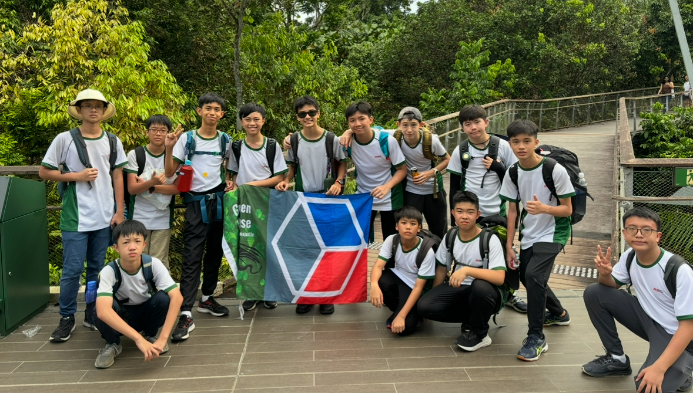

In 2024, I was appointed as a House Representative — a role that allowed me to take on greater responsibility within my school community. I actively supported the planning and execution of various house-related activities, helping to foster team spirit and a strong sense of identity among house members.
One of the most significant experiences in this role was leading and guiding a group of juniors during a two-day camp and trek. I was tasked with ensuring their safety, maintaining group morale, and keeping them engaged throughout the journey.
This experience strengthened my leadership, communication, and problem-solving skills, while also teaching me the importance of being a dependable and encouraging mentor to younger peers.